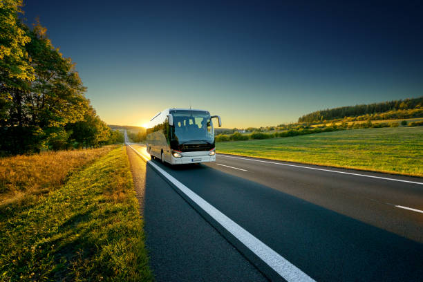

Rrugë të Reja të Shtuara në Shërbim!
Ne kemi zgjeruar shërbimet tona dhe tani ofrojmë udhëtime në më shumë qytete! Shihni rrugët e reja dhe mundësitë që ofrojmë në faqen "Rruget".
Publikuar më: 04 Maj, 2025
Lexo më shumëBusTrip KS është platforma #1 për planifikimin e udhëtimeve me autobus në Kosovë. E krijuar nga studentë e Innovation Academy me pasion për teknologji dhe udhëtime, misioni ynë është të thjeshtojmë mënyrën se si qytetarët udhëtojnë.
“Shumë e lehtë për t’u përdorur! E gjeta linjën për Gjakovë për 10 sekonda.”
- Sara, përdoruese“Platforma është shumë moderne dhe praktike për të gjitha moshat.”
- Drin, nxënës“Jam shumë krenar që ky projekt është nga nxenesit e Vushtrrisë. Punë e madhe!”
- Korabi, profesorNe kemi zgjeruar shërbimet tona dhe tani ofrojmë udhëtime në më shumë qytete! Shihni rrugët e reja dhe mundësitë që ofrojmë në faqen "Rruget".
Publikuar më: 04 Maj, 2025
Lexo më shumëPër shkak të periudhës së pushimeve verore, orari i autobusëve është përditësuar. Kontrolloni orarin e ri në faqen "Orari" për detajet e fundit.
Publikuar më: 02 Maj, 2025
Lexo më shumëShfrytëzoni ofertat speciale dhe zbritjet për biletat gjatë kësaj periudhe! Kërkoni mundësitë e ofruara në faqen "Bli Biletën".
Publikuar më: 28 Prill, 2025
Lexo më shumëNe besojmë që teknologjia mund të përmirësojë udhëtimin e përditshëm. BusTrip KS u krijua nga të rinj me qëllimin për të digjitalizuar mënyrën se si qytetarët e Kosovës planifikojnë udhëtimet – me shpejtësi, lehtësi dhe qasje për të gjithë.